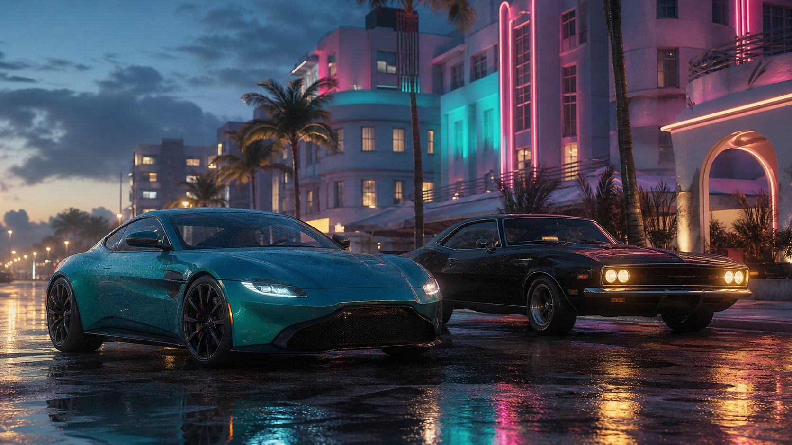
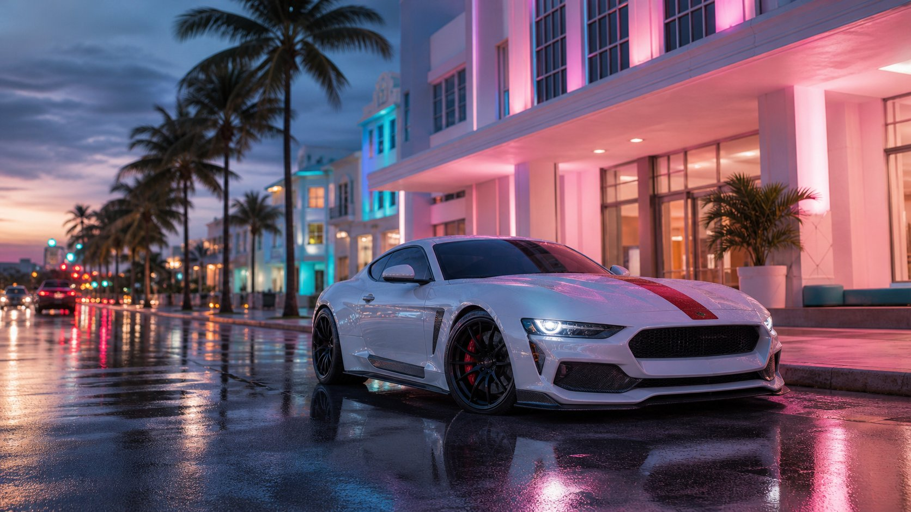
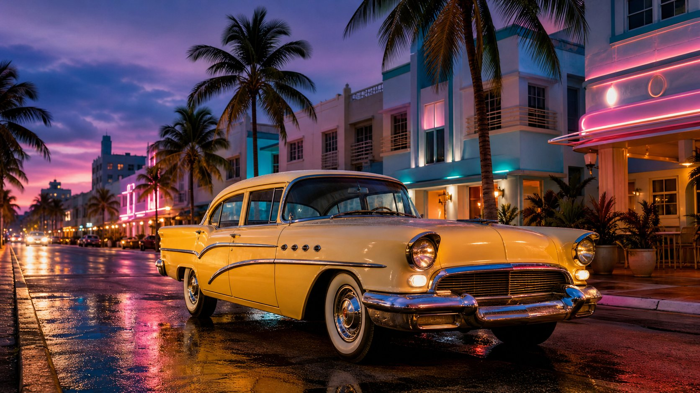
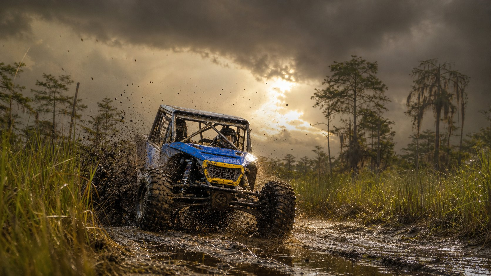

’95 Grotti Cheetah
Voiture de la collection classique de l’Ultimate Edition. Les ressemblances avec une sportive réelle sont des lectures de presse/fans; la marque canonique reste Grotti.

VOITURES · NOMS ROCKSTAR, REVIEWS & CONSEILS
Des modèles nommés par Rockstar aux ressentis de conduite des critiques : apprends à distinguer les faits publiés des listes de véhicules déduites des images.
La page des éditions Rockstar nomme des véhicules liés aux packs et bonus. Parmi les voitures, on peut retenir le ’95 Grotti Cheetah, le Vapid Ganado et le ’55 Vapid Stanier. La page nomme aussi le ’67 Vapid Dominator Buggy; ce n’est pas une voiture de route ordinaire. Ces mentions prouvent le nom et le contexte d’offre, pas des statistiques, une version disponible à tout moment ni l’intégralité du parc automobile.
Voiture de la collection classique de l’Ultimate Edition. Les ressemblances avec une sportive réelle sont des lectures de presse/fans; la marque canonique reste Grotti.
Le Ganado Retro Build est nommé parmi les contenus Ultimate. Les détails de conversion ou de performances sont à vérifier en jeu, au-delà de la description du contenu.
La berline classique est associée au Vintage Vice City Pack. Ne pas en déduire l’emplacement exact, la disponibilité post-précommande ou des caractéristiques de conduite.
Un reportage du 6 novembre décrit six véhicules mis en avant dans une série de captures Rockstar/WCC. Cette reconnaissance éditoriale ne constitue pas une liste textuelle exhaustive ni un relevé de statistiques.
Le 6 novembre, Hypebeast a publié une galerie de comparaisons entre véhicules GTA VI et répliques West Coast Customs, visuels crédités à Rockstar Games par l’éditeur. Pour limiter les appels directs aux médias tiers et respecter leur provenance, cette page renvoie à l’article au lieu d’intégrer ses vignettes. Les caractéristiques moteur de l’article décrivent les répliques réelles, pas les statistiques de jeu.
Grotti Cheetah · Albany Buccaneer · Progen Emerus · Invetero Coquette · Albany Manana · Pegassi Tempesta — Vice Beach Police.
Voir la galerie et les crédits chez Hypebeast ↗Tous les visuels de cette fiche sont des illustrations éditoriales générées en JPG; aucune image ne doit être prise pour une capture Rockstar.
Galerie officielle Rockstar ↗Source : Hypebeast / Hypedrive ↗ (6 novembre 2026). Attribution Rockstar Games telle qu’affichée par l’éditeur; droits réservés à leurs ayants droit.
Les critiques du 18 novembre décrivent un modèle de conduite retravaillé, avec des sensations qui changent selon les véhicules. Les conseils ci-dessous sont des traductions pratiques de leurs observations; les réglages de difficulté, l’assistance et les différences entre voitures peuvent modifier le ressenti.
| Sujet | Observation des critiques | Conseil prudent |
|---|---|---|
| Personnalisation | Plusieurs reviewers évoquent des ateliers spécialisés avec modifications esthétiques et de performance. | Compare avant/après dans une zone calme; les options varient selon l’atelier et le modèle. |
| Possession & garages | Les reviews décrivent des voitures personnelles, une capacité de garage et des services de récupération. | Vérifie que le véhicule est enregistré/stocké selon les prompts de jeu; n’assume pas qu’un véhicule volé devient immédiatement permanent. |
| Voiture comme coffre | Des testeurs rapportent stockage d’armes, vêtements, sacs ou objets dans le véhicule. | Prépare le coffre avant un braquage et garde en tête que la capacité dépend du type de véhicule selon les observations presse. |
| Vol & traceurs | Des critiques décrivent des méthodes de vol variables, des véhicules protégés et des recherches policières possibles. | Observe les alertes, choisis l’outil adapté et planifie l’itinéraire de sortie avant d’essayer de revendre. |
Les listes d’autos en ligne se contredisent sur les noms et le nombre total. Pour préserver la traçabilité, nous n’additionnons pas toutes les identifications de fans. La galerie Rockstar et la page Éditions sont les sources primaires; l’article sur les six voitures, les reviews et les bases communautaires servent à repérer des éléments à vérifier.
Illustrations éditoriales générées pour ce guide : elles ne sont pas des captures Rockstar et ne confirment ni l’apparence exacte d’un objet, ni un modèle ou des statistiques. Les noms mentionnés dans les légendes viennent séparément des sources textuelles citées.


